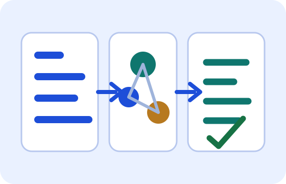

Fundamentals of Natural Language Processing
NLP وہ شعبہ ہے جس میں computer انسانی زبان کو پڑھنے، سمجھنے اور جواب دینے کی کوشش کرتا ہے۔
انسان زبان کو معنی، لہجے، سیاق اور تجربے سے سمجھتا ہے۔ computer کے لیے زبان کو numbers، patterns اور rules میں بدلنا پڑتا ہے۔ یہی NLP کا بنیادی کام ہے۔

NLP کی بنیادی سمجھ
NLP کا مطلب ہے Natural Language Processing۔ اس کا مقصد یہ ہے کہ computer text یا آواز میں موجود زبان کو ایسے انداز میں process کرے کہ وہ translation، summary، سوال جواب، sentiment، search، chatbot اور writing مدد جیسے کام کر سکے۔
مثال کے طور پر جب آپ لکھتے ہیں "مجھے اس مضمون کا خلاصہ دیں"، تو AI پہلے آپ کے text کو چھوٹے حصوں میں دیکھتا ہے، اہم الفاظ اور تعلقات سمجھنے کی کوشش کرتا ہے، پھر جواب بناتا ہے۔
NLP کیسے کام کرتا ہے؟
عام طور پر زبان کو پہلے صاف کیا جاتا ہے، پھر چھوٹے حصوں یعنی tokens میں تقسیم کیا جاتا ہے۔ اس کے بعد model الفاظ کے تعلقات، جملے کا مقصد، context اور pattern دیکھتا ہے۔
نئے models صرف الفاظ کی فہرست نہیں دیکھتے بلکہ یہ بھی دیکھتے ہیں کہ کون سا لفظ کس لفظ سے متعلق ہے، جملے کا مقصد کیا ہے، اور جواب کس شکل میں آنا چاہیے۔
Demo: NLP under the Hood
یہ mobile battery بہت جلد ختم ہو جاتی ہے۔
اندرونی خیال:model الفاظ "battery"، "جلد ختم" اور شکایت کے انداز کو دیکھتا ہے۔
Possible output:Sentiment منفی ہے، مسئلہ battery timing سے متعلق ہے۔
یہ ایک آسان demo ہے۔ اصل models میں یہ عمل بہت زیادہ mathematical ہوتا ہے، مگر بنیادی خیال یہی ہے کہ text سے معنی اور pattern نکالا جائے۔
Traditional Rule-based NLP vs. ML-based NLP
Rule-based NLP میں انسان rules لکھتا ہے، مثلا اگر sentence میں "اچھا" آئے تو positive سمجھو۔ یہ آسان cases میں کام کرتا ہے مگر زبان کی پیچیدگی میں کمزور پڑ جاتا ہے۔
ML-based NLP examples سے سیکھتا ہے۔ اسے بہت سا data دکھایا جاتا ہے تاکہ وہ patterns پہچانے۔ جدید Transformer models اسی learning کو بہت زیادہ طاقتور بنا دیتے ہیں۔
Rule-based طریقہ زیادہ controlled ہوتا ہے، مگر flexible کم۔ ML-based طریقہ زیادہ flexible ہوتا ہے، مگر اسے اچھا data اور verification چاہیے۔
اہم نکات
- NLP انسانی زبان کو computer کے لیے قابل process بناتا ہے۔
- Text کو tokens اور patterns میں دیکھا جاتا ہے۔
- Rule-based طریقہ fixed rules پر چلتا ہے۔
- ML-based طریقہ examples سے patterns سیکھتا ہے۔